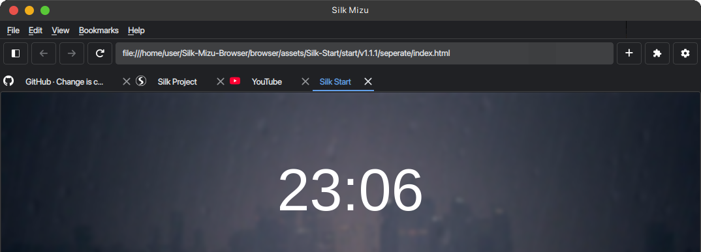
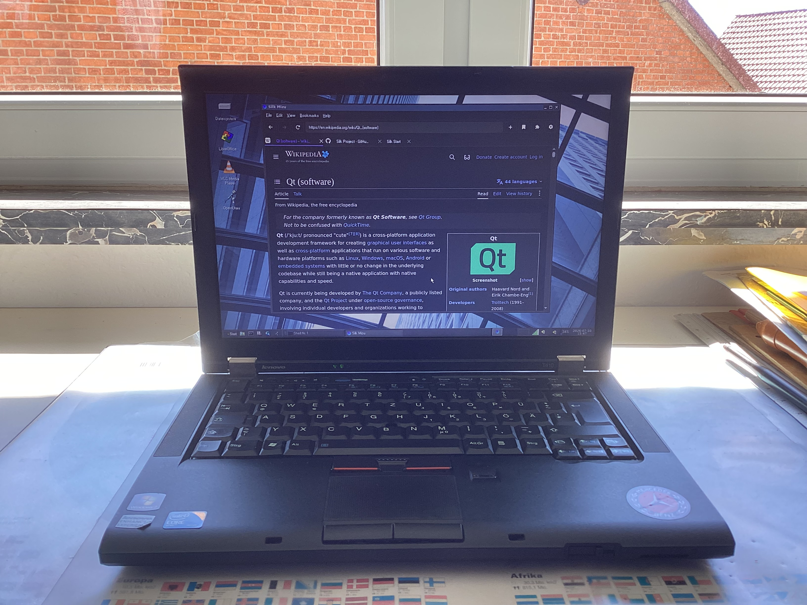
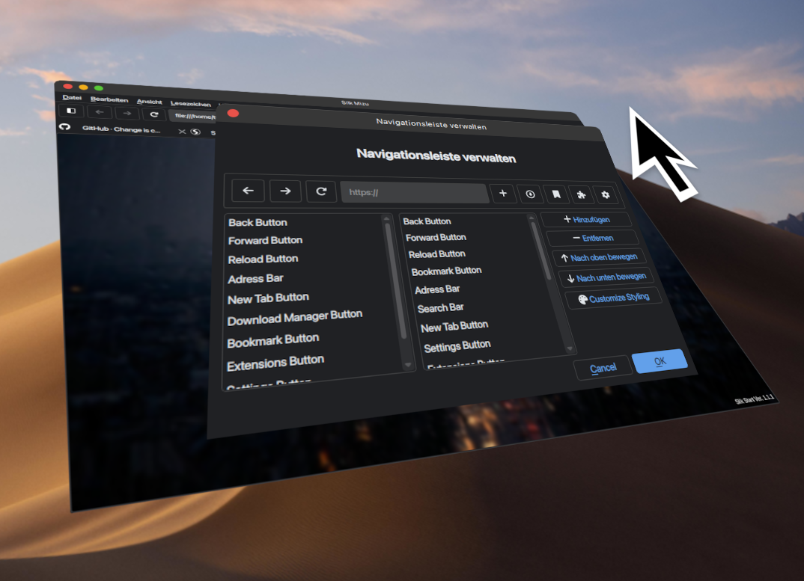
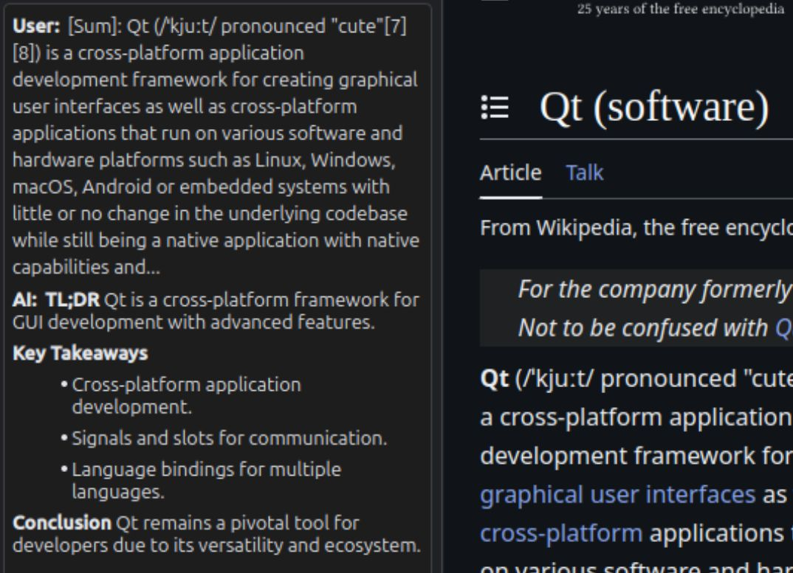

The only lightweight browser you'll ever need.
No telemety. No forced AI features. Unmatched customisability and completely open source codebase.
Visit GitHub

Highly compatible.
The Silk Mizu Browser supports various devices and operating systems. Due to its lightweight nature, it's suitable for older computers and offers great performance.
Don't like it? Change it.
The Silk Mizu browser offers great customisablity with the Theme Editor. Change any part of the browser interface to your liking. Want a button to open the sidebar? Add it. Don't want a top bar? Remove it.


Completely private.
We don't care about your usage data. We care about keeping your data safe. For this reason, we looked for opportunities in which exposing your private information to the internet is not needed. The AI Summary function, which requires no internet access, is one instance of this.
But that's not all!
In addition, the Mizu Browser offers you numerous other practical features to enhance your browsing experience:
Theme Packs
Easily import and export themes. Get new themes from the Theme Store.
AI Webpage Summary
Get a quick summary of the current website using a local and private Ollama AI model.
Tab manager
Quickly find your tabs by simply searching for their title or content using keywords or regular expressions.
Extension Store
Get extensions for the inbuilt browser sidebar to access useful tools while you are using the browser.
Localization
Use the browser in your preferred language.
Additional QSS styling
Customise the browser interface even further by directly styling the main browser interface with QSS.
FAQ
Why the name Mizu Browser?
The word Mizu (水) translates to "water" in japanese, which makes sense because you are "surfing" the web.
Why is the tab bar not located at the very top like in most popular browsers?
It's a limitation of the tab widget (QTabWidget) the browser is using to let the user and program manage the individual browser tabs. It is not possible to seperate the tab bar and the frame which displays the tab's content from a tab widget. They are always connected. The browser would need to adopt a new tab system in order to manage the tab bar and frame as separate widgets.
Why Qt?
The main reason we decided to use the Qt Framework to build the interface is due to the compatibility across multiple operating systems and the customisability. We were unimpressed by other GUI libraries due to their lack of customization, such as the inbuilt tkinter library.
Shields